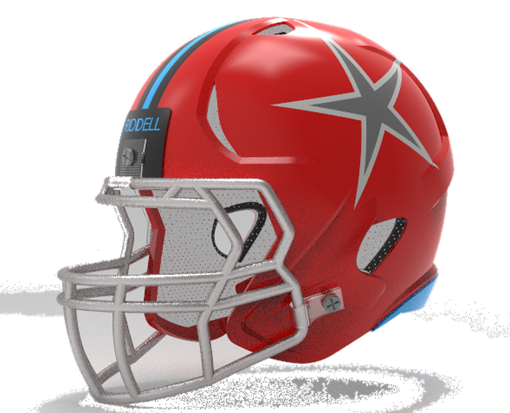

Axon AI pairs an in-helmet sensor array with machine learning to detect concussions as they happen — scoring acceleration, force, and rotation in real time, and alerting coaches before a second hit can land.

Head impacts slip past coaches and trainers, and the damage compounds — repeated undiagnosed hits are linked to CTE, memory loss, depression, and early-onset dementia. And it starts long before the pros.
Four pressure sensors map where every hit lands; a gyroscope and accelerometer capture how hard and how fast the head moved.
We're piloting with high-school football programs this season. Drop your email and we'll reach out.